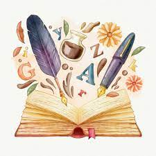

La literatura es una manifestación artística basada en el uso de la palabra y del lenguaje tanto escrito como oral. Asimismo es el nombre de una materia académica y el nombre de la teoría que estudia las obras literarias. La palabra literatura deriva del latín litteratūra. Con este término también se conoce al conjunto de las producciones literarias, por ejemplo, de un país, una lengua o una época. Por extensión, se utiliza además para referirse al conjunto de obras que tratan sobre un tema determinado.
Anteriormente el término literatura no existía, en el siglo XVII cualquier obra escrita era conocida bajo el nombre de poesía o elocuencia. Incluso, a lo largo del Siglo de Oro español se denominaba como poesía diversos tipos de obras bien fuesen escritas en verso, prosa o como una obra dramática. A partir del ligo XVIII que comenzó a hacerse uso de la palabra ‘literatura’, sin embargo, no fue hasta el siglo XIX que el término tomó el sentido con el cual se conoce en la actualidad. Posteriormente, en siglo XX el Formalismo ruso, en especial Roman Jakobson estudió con detenimiento aquello que era definido como literatura y sus características. De esta manera, logró diferenciar la función poética del lenguaje y la estética de la escritura para emitir un mensaje. Por tanto, no todo lo que se escribe se considera literatura, por ejemplo los textos periodísticos o las investigaciones académicas no cumplen con una función poética del lenguaje, aunque sí compartan un mensaje o información. La literatura es propia de la cultura del ser humano y tiene características propias de cada época y lugar donde se ha desarrollado. En la Antigüedad, en la literatura griega se crearon obras de referencia que marcarían a la producción literaria posterior como La Ilíada y La Odisea, ambas de Homero.
La literatura es un tipo de expresión artística que se vale del uso del lenguaje oral o escrito. En este sentido, el autor hace un uso estético de la palabra a fin de expresar una idea, sentimiento, experiencia o historia (real o ficticia) de manera no convencional o tradicional. Las descripciones en los relatos literarios tienen la capacidad de exponer emociones, sensaciones, olores, sabores, lugares, personajes y situaciones de manera particular, lo que destaca la función poética del lenguaje. Asimismo, la literatura como arte se caracteriza por usar elementos estéticos, generar placer por la lectura, despertar la imaginación del lector y ser capaz de trasladarlo a lugares y tiempos inimaginables.
La literatura se divide en géneros literarios que consiste en una clasificación de las obras en función de su contenido. La clasificación tradicional de los géneros literarios establece tres grandes tipos, que son:
iteratura antigua Hasta el momento los especialistas no han podido definir una data de inicio de la literatura antigua, sobre todo porque había una gran tradición oral. No obstante, se sabe que en los imperios mesopotámicos, China e India, fueron escritas las primeras obras literarias. Partiendo de los diferentes textos hallados, se calcula que el texto más antiguo es, aproximadamente, del año 2000 a.C., el Poema de Gligamesh, que narra la hazaña de un héroe sumerio. Otro de los libros más antiguos encontrados es el Libro de los muertos, que data del siglo XIII a.C., un texto funerario del Antiguo Egipto.
iteratura medieval La literatura medieval es aquella que se produjo entre la caída del Imperio Romano en el año 476 y la llegada de Colón a América en el año 1492. Durante ese periodo, la iglesia como institución, se apoderó de la literatura y el conocimiento. Los monjes eran quienes tenían acceso a los libros, traducciones de textos, la posibilidad de educarse y de redactar textos. Por ello, la literatura medieval se caracteriza por exponer un pensamiento religioso dominante. Sin embargo, también existen diferentes tipos de libros en los cuales predominan los temas populares escritos en copla. La literatura medieval fue el momento en el cual se originaron las primeras obras literarias en castellano.
Literatura clásica o literatura griega La Literatura griega abarca las obras escritas en griego antiguo o latín, hasta el auge del Imperio Bizantino. Forman parte de las obras literarias más importantes de la cultura occidental. Fue durante esta época que surgieron los conceptos de literatura y bellas artes y se expusieron las creencias de la mitología griega. Las obras literarias clásicas se caracterizan por ser poemas épicos o líricos. Por otra parte, son de gran influencia en la literatura posterior. Algunos de los autores más destacados fueron Homero, autor de La Ilíada y La Odisea y Hesíodo, autor de Trabajos y días. Posterior a la literatura clásica nacen los conceptos de Género literario y salen a luz autores reconocidos de la literatura universal.
Literatura renacentista La literatura renacentista se desarrolló durante los siglos XIV y XV y se caracteriza por idealizar y plasmar la realidad, así como por tomar como ejemplo a la naturaleza como símbolo de la perfección y del placer. Una de las obras exponentes de esta literatura es El príncipe de Maquiavelo.
Literatura barroca El Barroco fue un movimiento artístico que se desarrolló durante el siglo XVII y fue a partir de 1820, aproximadamente, cuando se emplea este término en literatura. Ésta se caracteriza por exponer una evolución de las bases del Renacimiento, hacer uso de un lenguaje culto y erudito por medio del cual, en ocasiones, hacen un uso excesivo de las figuras literarias.
Literatura del Romanticismo La literatura durante el Romanticismo se desarrolló a finales del siglo XVIII en Europa, específicamente, en Alemania, hasta finales del siglo XIX. Las obras literarias se caracterizaron por tener un predominio del “yo”, exponer temas preindustriales y la búsqueda continua de la originalidad. De esta época se destacan autores como Edgar Allan Poe, Johann Wolfgang von Goethe, entre otros.
Literatura contemporánea La Literatura contemporánea o literatura moderna se realizó a partir de importantes acontecimientos históricos, como por ejemplo, la Revolución Francesa en 1789, incluso, hasta el presente. Algunos de los estilos que surgen durante este período son el Romanticismo, el Realismo, el Modernismo y la literatura de Vanguardia.Esta literatura se caracteriza por haber estado constantemente en renovación debido a los complejos cambios sociales, políticos y culturales que ocurrieron a lo largo del siglo XIX. El resultado final de las obras deja reflejado cómo se rompe con las tendencias anteriores y se expone la realidad del momento a través de la originalidad.
Se denomina como literatura universal al conjunto de obras que se han convertido en referencia cultural debido a su contenido y autenticidad. Asimismo, se considera que estas obras deben ser conocidas por todas las personas. Por ejemplo, La Ilíada de Homero, Don Quijote de la Mancha de Miguel de Cervantes, Romeo y Julieta de William Shakespeare, Cien años de soledad de Gabriel García Márquez, entre otras.
